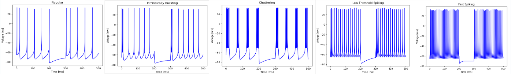

As a graduating electrical engineer, my goal is to immerse myself in a fast-paced environment where I can maximize my learning potential while contributing to the advancement of a company. I aspire to be at the forefront of innovation, as my life's journey has been defined by a pursuit of dynamic, ever-learning environments, ranging from motorsports to MMA to philosophy.
Ported and integrated AVIM HMD software from Windows 64-bit to Ubuntu on Nvidia Jetson in C. Configured Jetson hardware and software to be compatible: displaying vehicle 360° view and other camera angles on lenses with ultra low latency. Developed Military Prototype Computer Vision in Python for AVIM to apply to air and land bounded vehicles using several detection algorithms, a tracking algorithm using a Kalman filter for prediction and multithreading.
Designed and verified schematics for Arc Fault Detection System in hulls across an entire submarine. Fixed bugs and incorrect error and situation evaluation cable routing tool in C++ Designed and created a C++ software script algorithm that reduced time for tedious cable routing examination by 20x. The software drew a schematic of the entire system, while also presenting all relevant data/errors in a digestible format. Great experience with ensuring compliance, and rigorous component and design standards with the highest quality engineering for the most complex machine on earth. Practice of unusually high attention to detail.
PS: This is me driving and we consistently pull 2.5g's in hard cornering. Street cars on track tires will pull about 1.1g's on an autocross track.
Technical Director(Vice President):
Oversaw all research, design, manufacturing, and testing of the vehicle. Implemented a scrum approach and kanban framework. Won 1st place Cummin's Innovation Trophy. Direct manager for EV powertrain research and development.
Electronics Lead:
Grew and managed the largest subteam in the club, teaching high-grade motorsport practices. New steering wheel electronics design, new vehicle harness design, new BSPD PCBA design, new custom CAN board design, and new controls. Maximum Points earned in design bay.
Technical Skills: Circuits, Altium Designer, Device Physics, Testing Procedure, Documentation, PCBA Manufacturing
Soft Skills: Trouble Shooting, Time Management, Self Learning, Attention to Detail
Technical Specifications/Functions: A non programmable circuit that measures if the throttle is above 10% and the brakes are activated at the same time for more than 0.5 seconds. This must also measure for signal loss or loss of power to the device for more than 0.5 seconds and latch on any condition. Double redundant power and monitoring was included as the rules were left vague and unclarified.
Technical Skills: Controls, Component Selection, Sensor calibration
Soft Skills: Communication, V-Model Design Process Practice, Problem Solving, Teamwork, Creativity
Technical Specifications/Functions: Turn Brake Bias Balance Bar, Read Brake Balance Bar Position, Lightweight, Small Volume, Low power Consumption, Rigid, Low Complexity
As technical director I was extremely involved in the ergonomics of the car, I noticed that our team, like all other FSAE teams, could not properly add a brake bias knob as the pedal box area is too tight and it leads to many malfunctions. This led me to the idea of an electronic brake bias. I worked with two new members on hardware and software, guiding them and teaching them how to spec the motor and potentiometer, alongside with how to set up a basic control loop inside of Motec software. This project was simple, but comprised of a DC motor with an amazing torque output and a potentiometer to decipher brake bias at all times. This system worked really well and was a large reason to our first place Cummins innovation trophy.
Technical Skills: Project Management, CAN Network, Device I/O Understandment (Failure Modes), Device Physics, EMI protection, Motorsport Grade Manufacturing Techniques, Sensor Calibration, Sensor Seletion, Parts Selection
Soft Skills: Organization, Attention to Detail, Trouble Shooting, Time Management, Team Management, Decision Making
Technical Specifications/Functions: Reliable, Deliver enough power where needed, Battery can power car for full endurance, Standardized, Lighter, Easy/safe installation/removal, Engine Harness Segmentation
The hardest thing of this project was system integration as it spanned across seven other subteams which I was not very knowledgable about. I used motorsport grade manufacturing methods to ensure an extreme reliability under any condition. With such an electrically dense system routing, I/O methods, signal intergrity, ground loops, communcation methods, and many more things has to be well thought out in advance to provide a cohesive system. Seeing a further electrical expansion approaching, this began a platform to further develop our CAN system to enable more sensors.
Technical Skills: C, C++, Component Selection, CAN Protocol, PCBA Design and Manufacturing, EMI, Documentation, Testing Procedure, Altium Designer, Solidworks
Soft Skills: Trouble Shooting, Time Management, Self Learning, Attention to Detail
Technical Specifications/Functions: Communicate on a CAN bus at 1Mbps, Read Analog and Digital Inputs, Small PCBA Footprint, Vital Functions Easily Reversable
In an engineering competition, data is key for bettery design and our ECU started running out of input ports. In combattance, I created a custom CAN board and used our steering wheel as a test piece. The steering wheel was already restricted as the lifeline connectors presented problems with a maximum amount of wires. The steering wheel only has very basic functions so it servered as an amazing starting point. It also had the capability to be hard wired to an original condition if there was any board malfunction.
Technical Skills: Component Selection, Parts Selection, Systems Design, Integration, Altium Designer, Analog Circuits, Digital Circuits, Power Electronics, CAD, Altium Designer, C++, Arduino, CAN, Kanban, Kibiana Dash Board, Scrum Management
Soft Skills: Verbal and Written Communication, Project Management, Teamwork, Strategic Planning, Time Management, Problem Solving, Critical Thinking, Willingness to Learn, Collaboration, Creativity, Self Motivating, Emotional Intelligence, Leadership, Adaptability
Technical Specifications/Functions: An Electric Powertrain with a similar weight to IC powertrain (+10lbs), maximum power output, Fits within IC chassis width and length, Differential Driven, Reliable, Passes Technical Inspection, Will easily finish an endurance
The competition and the automotive industry is moving in the EV direction and it is an amazing place for innovation to take place. That being said, our club is transitioning to EV. Being the eldest electrical engineer with systems design background I was also in charge of the system design of the powertrain. I built a team alongside a few other members where we research as much as possible and began designing the best powertrain we could. As of now, parts are integrating extremely well through software and hardware. Our test bench is only complete as we await for a few more parts from manufacturers, but this has been an amazing and exciting challenge. We have created may pinouts, harnesses, and PCBAs to construc a cohesive system and time will only tell how well it stand up to motorsports.
Technical Skills: Altium Designer, Device Physics, Component Selection, Circuits, Documentation
Soft Skills: Self Learning, Attention to Detail, Trouble Shooting, Time Management
Technical Specifications/Functions: Long list within project proposal. *Details can be provided upon request*
Although not necessary for our first year of EV. It is a project I was eager to get a head start on. As I try to relinquish as much responsibility to the next generation of Pitt FSAE I am still trying to push our innovation space. I've been working on this custom AMS with Tesla sponsered integrated chips for two months now and am confident a working design will be ready soon. I'll keep this updated so check back later soon to see the progress I have made.
Technical Skills: C, Component Selection, Microcontrollers, Controls, Sensor Interfacing, Finite State Machines
Soft Skills: Communication, Creativity, Time Management, Teamwork, Troubleshooting
Technical Specifications/Functions: Bluetooth Communication, MQTT Commincation, Able to detect a collision, Able to complete a race track, Able to sense wall distances, able to detect lines on floor
I created the rover as part of my Cyber-Physical Systems Design Class. The hardware was provided by Texas Instruments and I provided the code. The robot was programmed in C with capabilities of MQTT communcations, wifi communications, bluetooth communications, infared distance sensors, infared line detection, and bump sensors coded using a combination of hardware and sysTick timers. The robot was able to complete the course dodging obstacles and other robots around the engineering hall 12th floor.
Technical Skills: Bluetooth Protocol, Serial, PCB Design, Integration, C++, UI, Documentation, Component Selection,
Soft Skills: Communication, Teamwork, Self Learning, Time Management, Teamwork, Troubleshooting, Resource Allocation, Customer Understandment
Technical Specifications/Functions: *Product Specification Sheet can be provided if requested*
As a project sponsored by NNL our goal was to create a 4-20mA detector interface. This included bluetooth communcation, 4 sensor inputs, and a screen for the user. Two PCBAs were created for the project, but the challenge was choosing MILSPEC parts with correct design justification down to the resistor. Military level documentation design, testing, and user manual documentation was created for the the entire system. I also learned the edge of design of an ATMEGA chip and its capabilities which is a common problem in transitioning from basic to advance products.
Technical Skills: C++, Altium Designer, PCB Design, PCBA Manufacturing of small components, Power Consumption Evaluation, Bluetooth, I2C, Interrupts
Soft Skills: Communication, Presenting, Troubleshooting, Teamwork, Collaboration, Integration, Understanding the Customer
Technical Specifications/Functions: Small form factor, Able to detect movement and alert user, Long Battery
This project was done for a class in conjunction with the Kensington Lock company to combat it expiring patents. The goal was to electrify old technology. In this project I learned how to make extremely small PCBAs and all of the manufacturing problems that arise with it. It was a simple system that comprised of a bluetooth capable microcontroller and an accelerometer. The most advantageuous goal of the project was to achieve the longest battery life possible. With a small coin cell battery I was able to verify a three year battery life for the product.
Technical Skills: Controls, Device Physics, Mechanical Physics, Mechanical Design, Python, Wiring, Computer Vision
Soft Skills: Communication, Troubleshooting
Technical Specifications/Functions: Able to balance a drone according to horizon detection
Sponsored by research faculty, this project was made to create a base model autonomous drone using neuromorphic methodologies to then convert to a platform using a Loihi chip. I redesigned mechanical hardware which caused a previous group to significantly struggle. I then redesign all of the controls to an extremely responsive state for directions of travel using PID controls across four propellers.
Technical Skills: SPI, Python, Computer Vision, System Design, Integration
Soft Skills: Self Learning, Troubleshooting
Serving as my final junior design project, I wanted more experience in internet systems and coding. Using a school server I found in E-waste, I created a hub to host automation bots, a security hub, and a remote desktop. The first automation bot I built was a "Jake Shake Bot" that scanned NHL stats API's every night then if Jake Guentzel scored, it outputted a message on Slack via a Slack API that a discount was available for milkshakes that day. I also created a security camera as part of this project. This comprised of a raspberry pi, a standard camera capable of infared, and a wifi usb stick. It used a simple motion detection code, recorded the video, then uploaded the video to the server.
Technical Skills: Python
Soft Skills: Integration, Teamwork
Technical Specifications/Functions: Functioning Neuron, Functioning
Serving as my final junior design project, I wanted more experience in internet systems and coding. Using a school server I found in E-waste, I created a hub to host automation bots, a security hub, and a remote desktop. The first automation bot I built was a "Jake Shake Bot" that scanned NHL stats API's every night then if Jake Guentzel scored, it outputted a message on Slack via a Slack API that a discount was available for milkshakes that day. I also created a security camera as part of this project. This comprised of a raspberry pi, a standard camera capable of infared, and a wifi usb stick. It used a simple motion detection code, recorded the video, then uploaded the video to the server.
Certificate - Innovation, Product Design, and Entrepreneurship
GPA: 3.23
GPA: 3.64
Four day seminar from an industry expert doing hands on examples of on-board DAQ, Logged Data Analysis, Driver Analysis, Vehicle Data Analysis, Tires, Vehicle Modeling and Simulation, Vehicle Measurements for Vehicle Modelling, Yaw Moment Diagram, Track Performance Prediction, and Racing Team Interaction. This course taught theory, not numbers. I have used the knowledge from this course to better model my system analysis regardless of motorsport relation.
Advanced: C++, C, C#, Python, MATLAB, Altium Design, Simulink, Excel, Visual Basic
Intermediate: Solid Works, LTSpice, PSpice, VHDL, HTML, CSS, JavaScript
Waterfall, Agile Development & Scrum, Lean management methodologies, V-Model Design
Data Analysis, Mathematics, Problem Solving
Leadership, Communication, Equanimity
Engineering is not only a major passion of mine, but I am also deeply drawn to the world of travel and exploring diverse cultures. Witnessing the rich tapestry of different societies around the globe serves as a profound inspiration for two additional hobbies that bring me immense joy: cooking and philosophy. I find that these pursuits are intricately intertwined with my love for discovering new cultures. Moreover, while engineering occupies a central role in my life, I firmly believe in leading an active and dynamic lifestyle. Engaging in various physical pursuits, such as the intense disciplines of Muay Thai and Brazilian Jiu-Jitsu, brings me great fulfillment. These martial arts not only challenge me physically but also foster discipline and resilience. Additionally, I have a cherished pastime that holds a special place in my heart: playing ice hockey. There is a unique thrill and camaraderie that comes with gliding across the ice and competing in the spirited game of hockey, particularly during the winter season when the opportunity arises for delightful pond hockey matches. If you have any intriguing recipes or captivating books to recommend, please don't hesitate to reach out to me at your convenience.